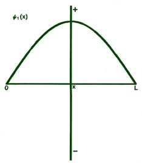
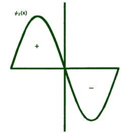
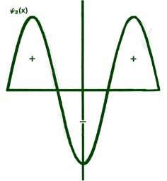
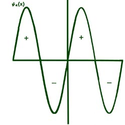
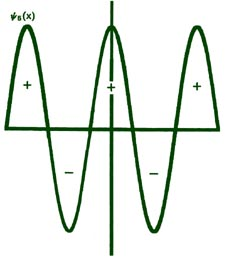
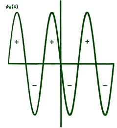
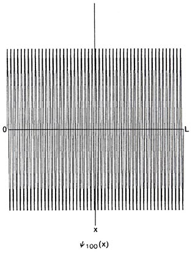
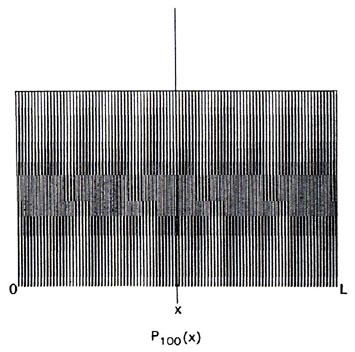

An Introduction to the Electronic Structure of Atoms
and Molecules
Dr. Richard F.W. Bader
Professor of Chemistry / McMaster University / Hamilton,
Ontario
|
Probability Amplitudes
In quantum mechanics, Newton's familiar equations
of motion are replaced by Schrödinger's equation. We shall not discuss
this equation in any detail, nor indeed even write it down, but one important
aspect of it must be mentioned. When Newton's laws of motion are applied
to a system, we obtain both the energy and an equation of motion. The equation
of motion allows us to calculate the position or coordinates of the system
at any instant of time. However, when Schrödinger's equation is solved
for a given system we obtain the energy directly, but not the probability
distribution functionCthe function which
contains the information regarding the position of the particle. Instead,
the solution of Schrödinger's equation gives only the amplitude of
the probability distribution function along with the energy. The probability
distribution itself is obtained by squaring the probability amplitude.
(Click
here for note.) Thus for every allowed value of the energy,
we obtain one or more (the energy value may be degenerate) probability
amplitudes.
The probability amplitudes are functions only of
the positional coordinates of the system and are generally denoted by the
Greek letter y (psi). For a bound system the
amplitudes as well as the energies are determined by one or more quantum
numbers. Thus for every En we have one or more
yn's and by squaring the yn's
we may obtain the corresponding Pn's.
Let us look at the forms of the amplitude functions for the simple
system of an electron confined to motion on a line. For any system, y
is simply some mathematical function of the positional coordinates. In
the present problem which involves only a single coordinate x, the
amplitude functions may be plotted versus the x-coordinate in the
form of a graph. The functions yn
are particularly simple in this case as they are sin functions.
The first few yn's are shown
plotted in Fig. 2-8.

Fig. 2-8. The first six probability amplitudes
yn(x)
for an electron moving on a line of length L. Note the yn(x)
may be negative in sign for certain values of x. The yn(x)
are squared to obtain the probability distrubrition functions Pn(x),
which are, therefore, positive for all values of x. Wherever yn(x)
crosses the x-axis and changes sign, a node appears in the corresponding
Pn(x).
Each of these graphs, when squared, yields the corresponding Pn
curves shown previously. When n = 1,
When x = 0,
When x = L,
When x = L/2,
Thus y equals zero at x = 0 and x
=
L and is a maximum when x = L/2. When this function is squared,
we obtain:
and the graph (Fig. 2-4)
previously given for P1(x).
As illustrated previously in Fig.
2-4, the value of yn2(x)
or Pn(x) multiplied by Dx,
yn2(x)Dx,
or Pn(x)Dx,
is the probability that the electron will be found in some particular small
segment of the line Dx. The constant
factor of
which appears in every yn(x)
is to assure that when the value of yn2(x)Dx
is summed over each of the small segments Dx,
the final value will equal unity. This implies that the probability that
the electron is somewhere on the line is unity, i.e., a certainty. Thus
the probability that the electron is in any one of the small segments Dx
(the value of yn2(x)Dx
or
Pn(x)Dx
evaluated at a value of x between 0 and L) is a fraction
of unity, i.e., a probability less than one. (Click
here for note.)
Each yn
must necessarily go to zero at each end of the line, since the probability
of the electron not being on the line is zero. This is a physical condition
which places a mathematical restraint on the yn
. Thus the only acceptable yn
's are those which go to zero at each end of the line. A solution of the
form shown in Fig. 2-9
is, therefore, not an acceptable one. Since there is but a single value
of the energy for each of the possible yn
functions, it is clear that only certain discrete values of the energy
will be allowed. The physical restraint of confining the motion to a finite
length of line results in the quantization of the energy. Indeed, if the
line is made infinitely long (the electron is then free and no longer bound),
solutions for any value of n, integer or non-integer, are possible;
correspondingly, all energies are permissible. Thus only the energies of
bound systems are quantized.
|
Fig. 2-9. An unacceptable form for yn(x). |
The yn
's have the appearance of a wave in that a given value of yn(x)
is repeated as x is increased. They are periodic functions of x.
We may, if we wish, refer to the wavelength of yn.
The wavelength of y1 is
2L since only one half of a wave fits on the length L. The
wavelength for y2,
is L since one complete wave fits in the length L. Similarly
l3, = (2/3)L and l4
= (2/4)L. In general:
Because of the wave-like nature of the yn
's , the new physics is sometimes referred to as wave mechanics, and the
yn
functions are called wave functions. However, it must be stressed that
a wave function itself has no physical reality. All
physical properties are determined by the product of the wave function
with itself. It is the product yn(x)yn(x)
which yields the physically measurable probability distribution. Thus yn2
may be observed but not yn
itself.
A yn
does not represent the trajectory or path followed by an electron in space.
We have seen that the most we can say about the position of an electron
is given by the probability function yn2.
We do, however, refer to the wavelengths of electrons, neutrons, etc. But
we must remember that the wavelengths refer only to a property of the amplitude
functions and not to the motion of the particle itself.
A number of interesting properties can be related
to the idea of the wavelengths associated with the wave functions or probability
amplitude functions. The wavelengths for our simple system are given by
l
= 2L/n. Can we identify these wavelengths with the wavelengths
which de Broglie postulated for matter waves and which obeyed the relationship:
The absolute value for the momentum (the magnitude of the momentum independent
of its direction) of an electron on the line is nh/2L. Substituting
this into de Broglie's relationship gives:
So indeed the wavelengths postulated by de Broglie to be associated with
the motions of particles are in reality the wavelengths of the probability
amplitudes or wave functions. There is no need to postulate "matter waves"
and the results of the electron diffraction experiment of Davisson and
Germer for example can be interpreted entirely in terms of probabilities
rather than in terms of "matter waves" with a wavelength
l = h/p.
It is clear that as n increases,
l becomes much less than L. For n = 100, y100and
P100
would
appear as in Fig. 2-10.
When L>>ln, the nodes in Pn
are so close together that the function appears to be a continuous function
of x. No experiment could in fact detect nodes which are so closely
spaced, and any observation of the position of the electron would yield
a result for P100
similar to that
obtained in the classical case. This is a general result. When
l
is
smaller than the important physical dimensions of the system, quantum effects
disappear and the system behaves in a classical fashion. This will always
be true when the system possesses a large amount of energy, i.e, a high
n
value. When, however, l is comparable to the
physical dimensions of the system, quantum effects predominate.

Fig. 2-10. The wave function and probability distribution
for n = 100.
Let us check to see whether or not quantum effects
will be evident for electrons bound to nuclei to form atoms. A typical
velocity of an electron bound to an atom is of the order of magnitude of
109 cm/sec. Thus:
This is a short wavelength, but it is of the same order of magnitude as
an atomic diameter. Electrons bound to atoms will definitely exhibit quantum
effects because the wavelength which determines their probability amplitude
is of the same size as the important physical dimensionCthe
diameter of the atom.
We can also determine the wavelength associated with the
motion of the mass of 1 g moving on a line 1 m in length with a velocity
of, say, 1 cm/sec:
This is an incredibly short wavelength, not only relative to the length
of the line but absolutely as well. No experiment could detect the physical
implications of such a short wavelength. It is indeed many, many times
smaller than the diameter of the mass itself. For example, to observe a
diffraction effect for such particles the spacings in the grating must
be of the order of magnitude of 1 ´ 10-27
cm. Such a grating cannot be made from ordinary matter since atoms themselves
are about 1019 times larger than this.
Even if such a grating could be found, it certainly wouldn't affect the
motion of a mass of 1 g as the size of the mass is approximately 1028
times larger than the spacings in the grating! Clearly, quantum effects
will not be observed for massive particles. It is also clear that the factor
which determines when quantum effects will be observed and when they will
be absent is the magnitude of Planck's constant h. The very small
magnitude of h restricts the observation of quantum effects to the
realm of small masses.